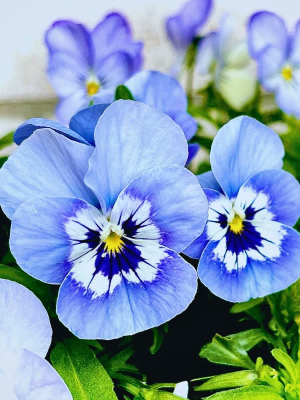
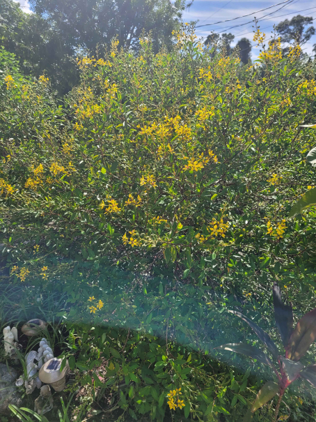
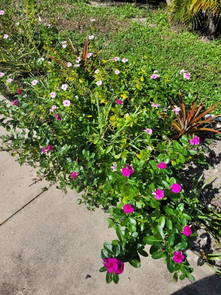

Petals & Pages
Brian's Garden Newsletter
Fall 2026 Edition | Written by Brian
Growing a Garden That Feels Like Home
Gardening is a very rewarding hobby that has lot's of benefits. It's a great way to go outside and meet yourself with the outdoors and sun. Gardening can be quite a hard job to do at first, but anything is possible if you practice enough, like with anything else in the world. When you finish something planting and looking at the flowers you have planted, you will feel a sense of accomplishment in the work you put in to make something bloom.
Choosing the right plants for you garden is important. What is your climate like in your area? What's the soil like? How much sunlight do you get? These are all important to what kind of garden you will have. You can't always choose the flowers you want unfortunately, but you can grow a garden that is unique to your area and climate.
Of course, gardening doesn't have to start off big. If anything, start small if you are new to gardening.Starting off with small pots of flowers can still make you feel great about what you have accomplished.When you start feeling comfortable with digging soil, watering, planting flowers, start trying to dig something in your yard. Or, if you don't have one, buy a flower bed. It still has the same effect of planting in the yard, but a bit easier. I hope these simple tips help you get started.
Seasonal Garden Notes | Simple ideas for brighter outdoor spaces
Three Tips for Your Next Planting Day
- Check the light: Match each plant to the amount of sun or shade available in its location.
- Prepare the soil: Loosen the soil and make sure extra water can drain away.
- Water thoughtfully: Check soil moisture and follow the needs of the specific plant.


